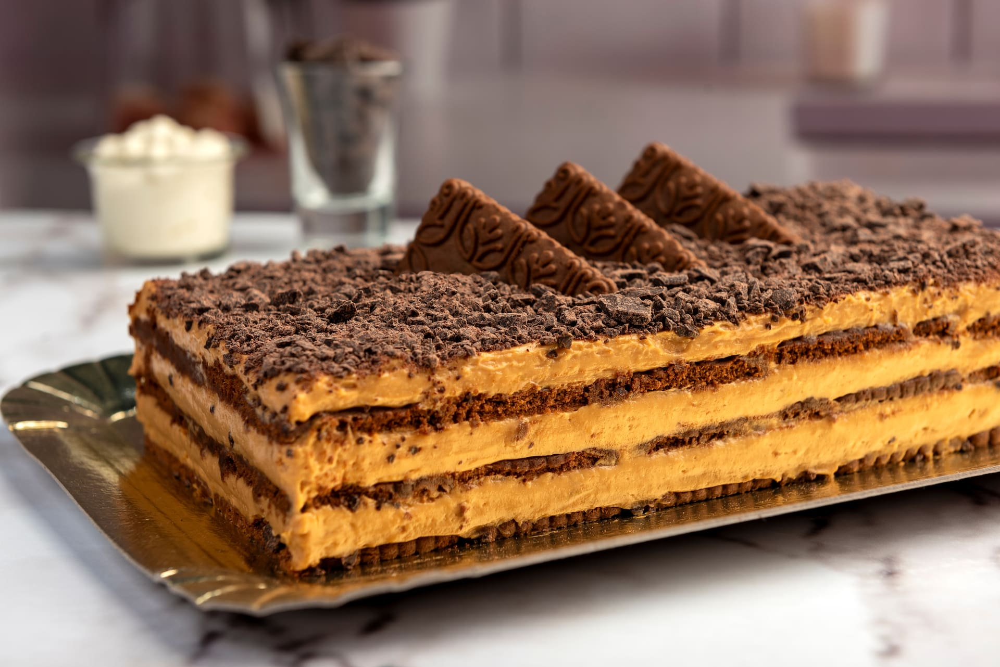
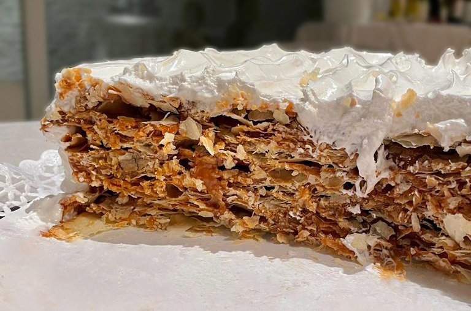
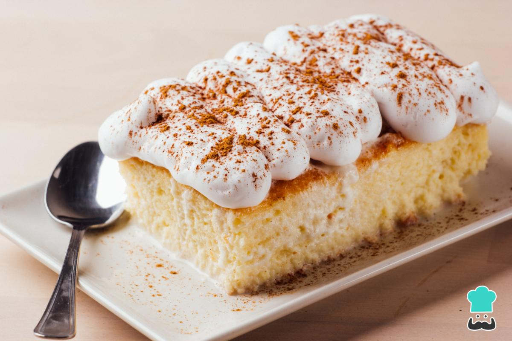

Seccion de Recetas

La Chocotorta es un clásico postre argentino sin cocción que se elabora intercalando capas de galletitas
de chocolate humedecidas con una crema suave hecha de partes iguales de dulce de leche y queso crema.
Ver Receta

El rogel (o torta rogel) es un postre tradicional argentino formado por varias capas finas de masa seca
y crocante, unidas con abundante dulce de leche y cubiertas con merengue italiano o suizo.
Ver Receta

Un cheesecake, también conocido como pastel de queso o tarta de queso, es un postre dulce y cremoso
hecho con una base de galletas trituradas y un relleno principal a base de queso.
Ver Receta

Un brownie es un postre horneado de origen estadounidense, hecho a base de chocolate. Su nombre viene
del inglés "brown" (marrón), por su característico color oscuro. Forma: suele ser cuadrado o
rectangular, ya que se hornea en una fuente grande y luego se corta en
porciones.
Ver Receta

La torta tres leches es un postre tradicional de América Latina, muy popular en México y Centroamérica.
Su nombre viene de que el bizcocho esponjoso se empapa en una mezcla de tres tipos de leche: evaporada,
condensada y crema. Eso le da su textura húmeda y jugosa, que es su sello distintivo. Suele cubrirse con
crema batida o merengue, y se sirve bien fría.
Ver Receta